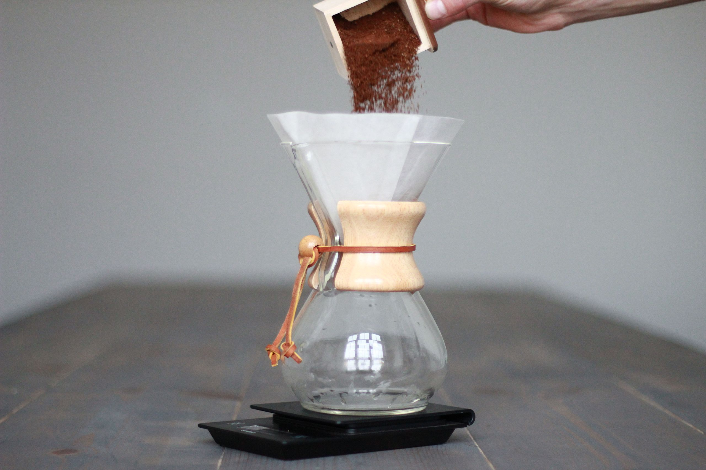

Pourover Coffee

Description
This is the recipe I use to make my coffee every day in the morning.
I use a hand grinder from Made By Knock, a Size 02 V60 Coffee Dripper, and Hario filter papers made in Japan.
I just use tap water but were I not concerned about cost or waste, I would certainly be using bottled mineral water.
Many factors affect the flavour of the coffee but go beyond the scope of this recipe.
Aim for a total brew time of roughly 2.5 to 3.5 minutes.
Makes approx 300ml coffee.
Ingredients
- Water, 500ml
- Light-roast coffee beans, 18g
Steps
- Heat the water to 90ºC.
- While the water is boiling, grind the coffee beans.
- Open the paper filter, place in the dripper, and place the dripper on a suitable container for the coffee.
- Soak the filter with the boiled water. You don't need to fill the whole dripper, but all of the paper does need to get wet.
If using unbleached paper, you will need to rinse thoroughly to remove any flavour from the paper.
- Drain the filter and container of any water.
- Add the coffee to the dripper in the centre, avoiding getting coffee grains high up the sides of the filter paper.
- Place the container and dripper on some scales and tare the scales (set the weight to 0).
- Pour water over the coffee until the scales display 75g. Avoid touching the filter paper with the water as it pours.
The first pour should be done as quickly as possible to the coffee has an even brewing time.
- Pour water until the scales display 150g. Pour in a circular motion around the edge of the coffee, without touching the paper filter.
- Repeat as above until the scales display 225g.
- Repeat as above until the scales display 300g.
- When most of the water has dripped through the filter, remove the dripper and serve the coffee, pouring small amounts at a time.
Leaving the coffee to drip until the grains totally dry out will adversely affect the flavour.
Home